This page shows how the simulation results in Section 4.1 of Shankar et al. (2026) are generated.
library(tidyverse)
library(roams) # version 0.6.5
library(future)
## Number of cores to use
num_cores = 8
study = "study1"
seed = paste0("seed", 2025)
data_path = "data/"
scripts_path = "scripts/"
run_sim = FALSESimulate data for Study 1
Simulated data is generated using the
simulate_data_study1() function. We set it to generate
B = 200 data sets for each combination of sample size (100,
200, 500, 1000) and outlier configuration (clean data, fixed distance,
multi-level, cluster). Seed is set to 2025.
true_par = c(0.8, 0.1, 0.1, 0.4, 0.4)
multi_level_distances = c(3,5,7)
data_study1 = simulate_data_study1(
sample_sizes = c(100, 200, 500, 1000),
samples = 200,
n_oos = 20,
contamination = 0.1,
distance = 5,
sd_cluster = 2,
mean_cluster = c(20, 20),
multi_level_distances = multi_level_distances,
phi_coef = true_par[1],
sigma2_w_lon = true_par[2],
sigma2_w_lat = true_par[3],
sigma2_v_lon = true_par[4],
sigma2_v_lat = true_par[5],
initial_state = c(0, 0, 0, 0),
seed = as.numeric(str_remove(seed, "seed"))
)
# The following lines ensure that the out-of-sample data for each n and each configuration is the same.
# This reduces variance and enhances clarity in the MSFE plots shown in the results section.
data_study1_y_oos = data_study1 |>
filter(n == 100, setting == "clean data") |>
pull(y_oos)
data_study1 = data_study1 |>
group_by(n, setting) |>
mutate(y_oos = data_study1_y_oos) |>
ungroup()
readr::write_rds(data_study1,
paste0(data_path, "data_", study, "_", seed, ".rds"),
compress = "gz")Fit models for Study 1
5 models are fit to each data set: classical, oracle, ROAMS, Huber,
and trimmed. Each data frame of models can be large in size and takes
days to fit, so they are saved in 5 separate .rds
files.
plan(multisession, workers = num_cores)
classical_start = Sys.time()
model_fits_classical_study1 = data_study1 |>
mutate(
classical_model = furrr::future_map(y, function(y) {
build = function(par) {
phi_coef = par[1]
Phi = diag(c(1+phi_coef, 1+phi_coef, 0, 0))
Phi[1,3] = -phi_coef
Phi[2,4] = -phi_coef
Phi[3,1] = 1
Phi[4,2] = 1
A = diag(4)[1:2,]
Q = diag(c(par[2], par[3], 0, 0))
R = diag(c(par[4], par[5]))
x0 = c(y[1,], y[1,])
P0 = diag(rep(0, 4))
specify_SSM(
state_transition_matrix = Phi,
state_noise_var = Q,
observation_matrix = A,
observation_noise_var = R,
init_state_mean = x0,
init_state_var = P0)
}
classical_SSM(
y = y,
init_par = c(0.5, rep(c(mad(diff(y[,1]), na.rm = TRUE)^2,
mad(diff(y[,2]), na.rm = TRUE)^2), 2)),
build = build,
lower = c(0, rep(1e-12, 4)),
upper = c(1, rep(Inf, 4))
)},
.progress = TRUE),
.keep = "none")
classical_end = Sys.time()
classical_end - classical_start
readr::write_rds(model_fits_classical_study1,
paste0(data_path, "classical_", study, "_", seed, ".rds"),
compress = "gz")
plan(sequential)
rm(model_fits_classical_study1) ## free up memory
plan(multisession, workers = num_cores)
oracle_start = Sys.time()
model_fits_oracle_study1 = data_study1 |>
mutate(
oracle_model = furrr::future_map2(y, outlier_locs, function(y, outlier_locs) {
build = function(par) {
phi_coef = par[1]
Phi = diag(c(1+phi_coef, 1+phi_coef, 0, 0))
Phi[1,3] = -phi_coef
Phi[2,4] = -phi_coef
Phi[3,1] = 1
Phi[4,2] = 1
A = diag(4)[1:2,]
Q = diag(c(par[2], par[3], 0, 0))
R = diag(c(par[4], par[5]))
x0 = c(y[1,], y[1,])
P0 = diag(rep(0, 4))
specify_SSM(
state_transition_matrix = Phi,
state_noise_var = Q,
observation_matrix = A,
observation_noise_var = R,
init_state_mean = x0,
init_state_var = P0)
}
oracle_SSM(
y = y,
init_par = c(0.5, rep(c(mad(diff(y[,1]), na.rm = TRUE)^2,
mad(diff(y[,2]), na.rm = TRUE)^2), 2)),
build = build,
outlier_locs = outlier_locs,
lower = c(0, rep(1e-12, 4)),
upper = c(1, rep(Inf, 4))
)},
.progress = TRUE),
.keep = "none")
oracle_end = Sys.time()
oracle_end - oracle_start
readr::write_rds(model_fits_oracle_study1,
paste0(data_path, "oracle_", study, "_", seed, ".rds"),
compress = "gz")
plan(sequential)
rm(model_fits_oracle_study1) ## free up memory
plan(multisession, workers = num_cores)
roams_start = Sys.time()
model_fits_roams_study1 = data_study1 |>
mutate(
model_list = furrr::future_map(y, function(y) {
build = function(par) {
phi_coef = par[1]
Phi = diag(c(1+phi_coef, 1+phi_coef, 0, 0))
Phi[1,3] = -phi_coef
Phi[2,4] = -phi_coef
Phi[3,1] = 1
Phi[4,2] = 1
A = diag(4)[1:2,]
Q = diag(c(par[2], par[3], 0, 0))
R = diag(c(par[4], par[5]))
x0 = c(y[1,], y[1,])
P0 = diag(rep(0, 4))
specify_SSM(
state_transition_matrix = Phi,
state_noise_var = Q,
observation_matrix = A,
observation_noise_var = R,
init_state_mean = x0,
init_state_var = P0)
}
roams_SSM(
y = y,
init_par = c(0.5, rep(c(mad(diff(y[,1]), na.rm = TRUE)^2,
mad(diff(y[,2]), na.rm = TRUE)^2), 2)),
build = build,
num_lambdas = 20,
cores = 1,
lower = c(0, rep(1e-12, 4)),
upper = c(1, rep(Inf, 4)),
B = 50
)},
.progress = TRUE),
best_BIC_model = map(model_list, best_BIC_model),
.keep = "none")
roams_end = Sys.time()
roams_end - roams_start
readr::write_rds(model_fits_roams_study1,
paste0(data_path, "roams_", study, "_", seed, ".rds"),
compress = "gz")
plan(sequential)
rm(model_fits_roams_study1) ## free up memory
plan(multisession, workers = num_cores)
huber_start = Sys.time()
model_fits_huber_study1 = data_study1 |>
mutate(
huber_model = furrr::future_map(y, function(y) {
build_huber_trimmed = function(par) {
phi_coef = par[1]
Phi = diag(c(1+phi_coef, 1+phi_coef, 0, 0))
Phi[1,3] = -phi_coef
Phi[2,4] = -phi_coef
Phi[3,1] = 1
Phi[4,2] = 1
A = diag(4)[1:2,]
Q = diag(c(par[2], par[3], 0, 0))
R = diag(c(par[4], par[5]))
x0 = c(y[1,], y[1,] + 0.01)
P0 = diag(rep(0, 4))
specify_SSM(
state_transition_matrix = Phi,
state_noise_var = Q,
observation_matrix = A,
observation_noise_var = R,
init_state_mean = x0,
init_state_var = P0)
}
huber_robust_SSM(
y = y,
init_par = c(0.5, rep(c(mad(diff(y[,1]), na.rm = TRUE)^2,
mad(diff(y[,2]), na.rm = TRUE)^2), 2)),
build = build_huber_trimmed,
lower = c(0.001, rep(1e-12, 4)),
upper = c(0.999, rep(Inf, 4))
)},
.progress = TRUE),
.keep = "none")
huber_end = Sys.time()
huber_end - huber_start
readr::write_rds(model_fits_huber_study1,
paste0(data_path, "huber_", study, "_", seed, ".rds"),
compress = "gz")
plan(sequential)
rm(model_fits_huber_study1) ## free up memory
plan(multisession, workers = num_cores)
trimmed_start = Sys.time()
model_fits_trimmed_study1 = data_study1 |>
mutate(
trimmed_model = furrr::future_map(y, function(y) {
build_huber_trimmed = function(par) {
phi_coef = par[1]
Phi = diag(c(1+phi_coef, 1+phi_coef, 0, 0))
Phi[1,3] = -phi_coef
Phi[2,4] = -phi_coef
Phi[3,1] = 1
Phi[4,2] = 1
A = diag(4)[1:2,]
Q = diag(c(par[2], par[3], 0, 0))
R = diag(c(par[4], par[5]))
x0 = c(y[1,], y[1,] + 0.01)
P0 = diag(rep(0, 4))
specify_SSM(
state_transition_matrix = Phi,
state_noise_var = Q,
observation_matrix = A,
observation_noise_var = R,
init_state_mean = x0,
init_state_var = P0)
}
trimmed_robust_SSM(
y = y,
init_par = c(0.5, rep(c(mad(diff(y[,1]), na.rm = TRUE)^2,
mad(diff(y[,2]), na.rm = TRUE)^2), 2)),
build = build_huber_trimmed,
alpha = 0.1,
lower = c(0.001, rep(1e-12, 4)),
upper = c(0.999, rep(Inf, 4))
)},
.progress = TRUE),
.keep = "none")
trimmed_end = Sys.time()
trimmed_end - trimmed_start
readr::write_rds(model_fits_trimmed_study1,
paste0(data_path, "trimmed_", study, "_", seed, ".rds"),
compress = "gz")
plan(sequential)
rm(model_fits_trimmed_study1) ## free up memoryCompute evaluation metrics for fitted models
Using the model fits, in-sample and out-of-sample evaluation metrics
(sensitivity, specificity, estimation RMSE, one-step-ahead MSFE) are
computed. Functions to compute these metrics are sourced from the
scripts/evaluation_functions.R script file. This process
takes a few minutes to run, so the output is saved to the file
data/eval_metrics_study1.rds.
classical_study1 = read_rds(paste0(
data_path, "classical_", study, "_", seed, ".rds"))
roams_study1 = read_rds(paste0(
data_path, "roams_", study, "_", seed, ".rds"))
oracle_study1 = read_rds(paste0(
data_path, "oracle_", study, "_", seed, ".rds"))
huber_study1 = read_rds(paste0(
data_path, "huber_", study, "_", seed, ".rds"))
trimmed_study1 = read_rds(paste0(
data_path, "trimmed_", study, "_", seed, ".rds"))
data_study1 = read_rds(paste0(
data_path, "data_", study, "_", seed, ".rds"))
model_fits_study1 = data_study1 |>
bind_cols(classical_study1) |>
bind_cols(roams_study1) |>
bind_cols(oracle_study1) |>
bind_cols(huber_study1) |>
bind_cols(trimmed_study1)
model_fits_study1 = model_fits_study1 |>
select(-model_list) |>
rename(roams_fut_model = best_BIC_model) |>
mutate(roams_kalman_model = roams_fut_model)
source(paste0(scripts_path, "evaluation_functions.R"))
eval_start = Sys.time()
eval_metrics_study1 = model_fits_study1 |>
pivot_longer(ends_with("_model"),
names_to = "method",
values_to = "model") |>
mutate(
MSFE = pmap_dbl(list(model, method, y_oos), .f = get_MSFE),
TPR = map2_dbl(model, outlier_locs, .f = get_TPR),
TNR = map2_dbl(model, outlier_locs, .f = get_TNR),
TPR_small = map2_dbl(
model, outlier_levels,
.f = ~ get_TPR_multilevel(.x, .y,
level = multi_level_distances[1])),
TPR_medium = map2_dbl(
model, outlier_levels,
.f = ~ get_TPR_multilevel(.x, .y,
level = multi_level_distances[2])),
TPR_large = map2_dbl(
model, outlier_levels,
.f = ~ get_TPR_multilevel(.x, .y,
level = multi_level_distances[3])),
par_dist_phi = map_dbl(
model, .f = ~ get_par_dist_phi(.x, true_par)),
par_dist_obs_var = map_dbl(
model, .f = ~ get_par_dist_obs_var(.x, true_par)),
par_dist_state_var = map_dbl(
model, .f = ~ get_par_dist_state_var(.x, true_par)),
iterations = map2_dbl(model, method, .f = ~ ifelse(
str_starts(.y, "roams"),
.x$iterations,
NA
)),
lambda = map2_dbl(model, method, .f = ~ ifelse(
str_starts(.y, "roams"),
.x$lambda,
NA
))
) |>
select(-c(model,
y_oos, x_oos, y, y_clean, x,
outlier_locs, outlier_levels)) ## reduce size of object by removing data set information
eval_end = Sys.time()
eval_end - eval_start
readr::write_rds(eval_metrics_study1,
paste0(data_path, "eval_metrics_study1.rds"))Results
We illustrate the results contained in
eval_metrics_study1.rds using plots and tables.
Load packages for plots and tables:
library(patchwork)
library(ggtext)
library(knitr)
library(kableExtra)
library(ggbeeswarm)
theme_set(
theme_bw(base_size = 14) +
theme(legend.position = "bottom",
legend.key.width = unit(1.2, "cm"))
)
LW = 0.8 # linewidths
PS = 2.0 # point sizesLoad eval_metrics_study1.rds:
Check number of replicates per sample size \(n\) and configuration:
eval_metrics_study1 |>
filter(method == "roams_fut_model") |>
janitor::tabyl(n, setting) |>
knitr::kable()| n | clean data | cluster | fixed distance | multi-level |
|---|---|---|---|---|
| 100 | 200 | 200 | 200 | 200 |
| 200 | 200 | 200 | 200 | 200 |
| 500 | 200 | 200 | 200 | 200 |
| 1000 | 200 | 200 | 200 | 200 |
Mean sensitivity and specificity
Figure 2 of Shankar et al. (2026):
settings = c("clean data", "cluster", "fixed distance", "multi-level")
labels_settings = c("Clean data", "Cluster", "Fixed distance", "Multi-level")
p1 = eval_metrics_study1 |>
filter(method == "roams_fut_model") |>
group_by(n, setting) |>
summarise(Sensitivity = mean(TPR),
Specificity = mean(TNR)) |>
pivot_longer(c(Sensitivity, Specificity),
names_to = "metric", values_to = "value") |>
ggplot() +
aes(x = factor(n), y = value,
colour = setting, group = setting, linetype = setting) +
geom_line(linewidth = LW) +
geom_point(size = PS) +
facet_wrap(~ metric, nrow = 1, scales = "fixed",
labeller = labeller(metric = c(
"Sensitivity" = "Mean Sensitivity",
"Specificity" = "Mean Specificity"))) +
labs(x = "n", y = NULL, colour = NULL, linetype = NULL) +
scale_y_continuous(labels = scales::percent, limits = c(0.3,1)) +
scale_colour_manual(
values = setNames(c("#0072B2","#56B4E9","#009E73","#F5C710"), settings),
labels = setNames(labels_settings, settings)) +
scale_linetype_manual(
values = setNames(c("solid", "dashed", "dotted", "dotdash"), settings),
labels = setNames(labels_settings, settings)) +
guides(colour = guide_legend(ncol = 2, byrow = TRUE))
p2 = eval_metrics_study1 |>
filter(setting == "multi-level") |>
filter(method == "roams_fut_model") |>
pivot_longer(starts_with("TPR_"), names_to = "level", values_to = "rate") |>
mutate(level = case_when(
level == "TPR_large" ~ "Large",
level == "TPR_medium" ~ "Medium",
level == "TPR_small" ~ "Small",
)) |>
group_by(n, level) |>
summarise(TPR = mean(rate)) |>
mutate(facet_label = "Mean Sensitivity \n(multi-level outliers)") |>
ggplot() +
aes(x = factor(n), y = TPR,
colour = level, group = level, linetype = level) +
geom_line(linewidth = LW) +
geom_point(size = PS) +
facet_wrap(~ facet_label) +
scale_colour_manual(values = c("#5B126EFF","#D24644FF","#FCA108FF")) +
labs(x = "n", y = NULL,
colour = NULL, linetype = NULL) +
scale_y_continuous(labels = scales::percent, limits = c(0.3,1)) +
guides(colour = guide_legend(ncol = 2, byrow = TRUE))
p1 + p2 + plot_layout(ncol = 2, widths = c(2,1), axes = "collect")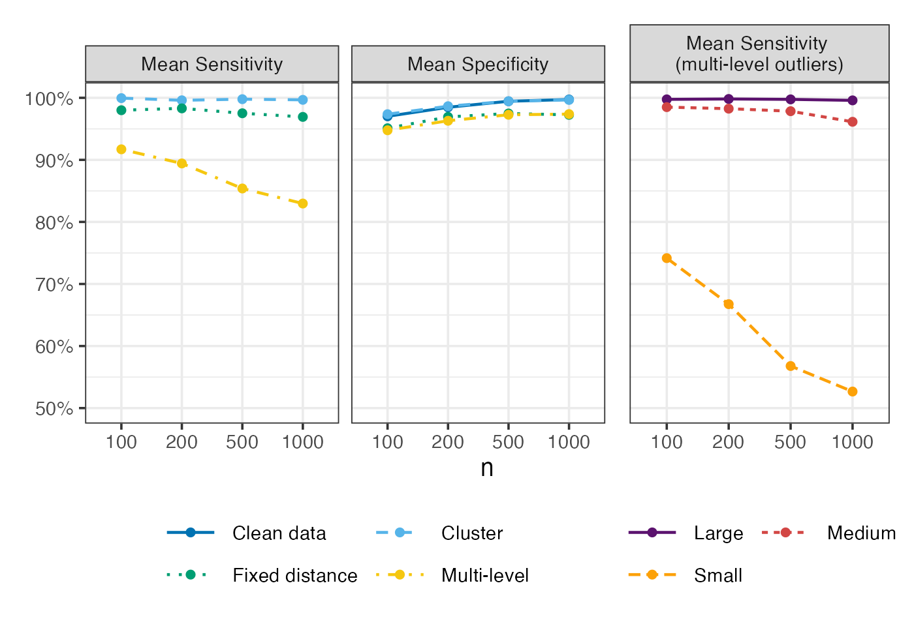
Raw sensitivity and specificity
Sensitivity and specificity of the ROAMS method for each replicate are plotted. Each point corresponds to a replicate:
eval_metrics_study1 |>
filter(method == "roams_fut_model") |>
filter(setting != "clean data") |>
ggplot() +
aes(x = factor(n), y = TPR) +
geom_beeswarm(corral = "random", corral.width = 0.9, alpha = 0.5,
cex = 0.5) +
facet_wrap(~ setting, nrow = 1, scales = "fixed",
labeller = as_labeller(setNames(labels_settings, settings))) +
labs(x = "n", y = "True positive rate") +
scale_y_continuous(labels = scales::percent, limits = c(0,1))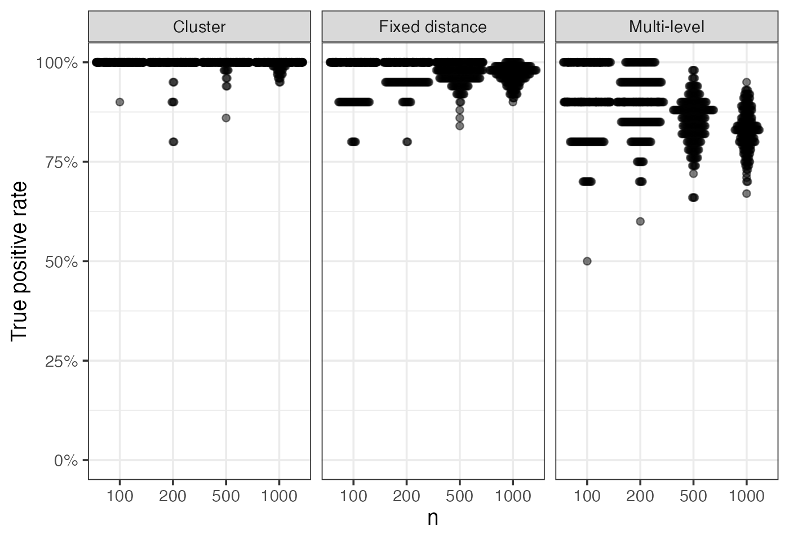
eval_metrics_study1 |>
filter(method == "roams_fut_model") |>
ggplot() +
aes(x = factor(n), y = TNR) +
geom_beeswarm(corral = "random", corral.width = 0.9, alpha = 0.5,
cex = 0.5) +
facet_wrap(~ setting, nrow = 2, scales = "fixed",
labeller = as_labeller(setNames(labels_settings, settings))) +
labs(x = "n", y = "True negative rate") +
scale_y_continuous(labels = scales::percent, limits = c(0,1))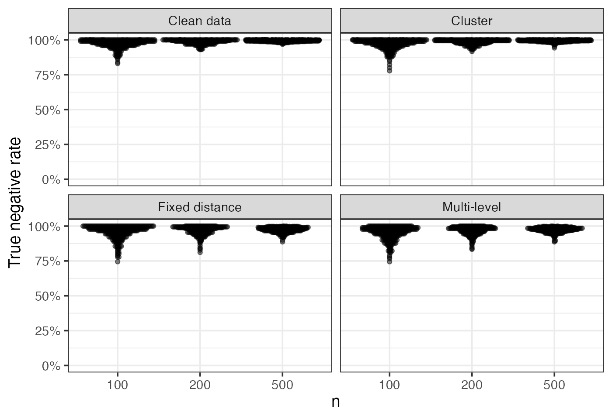
eval_metrics_study1 |>
filter(method == "roams_fut_model") |>
filter(setting == "multi-level") |>
pivot_longer(starts_with("TPR_"), names_to = "level", values_to = "rate") |>
mutate(level = case_when(
level == "TPR_large" ~ "Large",
level == "TPR_medium" ~ "Medium",
level == "TPR_small" ~ "Small",
)) |>
ggplot() +
aes(x = factor(n), y = rate, colour = level) +
geom_beeswarm(corral = "random", corral.width = 0.9, alpha = 0.5,
cex = 0.5) +
facet_wrap(~ level) +
scale_colour_manual(values = c("#5B126EFF","#D24644FF","#FCA108FF")) +
labs(x = "n", y = "True positive rate \n (multi-level outliers)") +
theme(legend.position = "none") +
scale_y_continuous(labels = scales::percent, limits = c(0,1))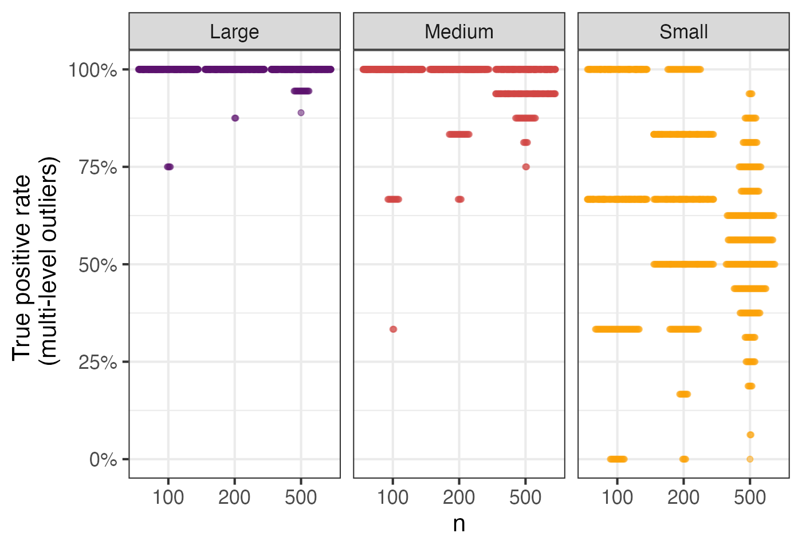
Out-of-sample MSFE
Mean-aggregated (Figure 3 of Shankar et al. (2026)) and raw box plots of the one-step-ahead out-of-sample MSFE:
methods = c("roams_fut_model", "roams_kalman_model", "classical_model", "huber_model", "trimmed_model", "oracle_model")
labels = c("**ROAMS-FUT**", "**ROAMS-Kalman**", "Classical", "Huber", "Trimmed", "Oracle")
colours = c("orange", "gold", "royalblue", "brown3", "purple3", "green4")
linetypes = c("solid", "solid", "dotted", "dashed", "dashed", "dotdash")
eval_metrics_study1 |>
select(sample, n, setting, method, MSFE) |>
group_by(n, setting, method) |>
summarise(MSFE = mean(MSFE)) |>
mutate(method = factor(method, levels = methods)) |>
ggplot() +
aes(x = factor(n), y = MSFE, colour = method, linetype = method,
group = method) +
geom_line(linewidth = LW) +
geom_point(size = PS) +
facet_wrap(~ setting, scales = "free_y",
labeller = as_labeller(setNames(labels_settings, settings))) +
scale_colour_manual(values = setNames(colours, methods),
labels = setNames(labels, methods)) +
scale_linetype_manual(values = setNames(linetypes, methods),
labels = setNames(labels, methods)) +
labs(x = "n", y = "Mean MSFE", colour = NULL, linetype = NULL) +
theme(legend.text = element_markdown())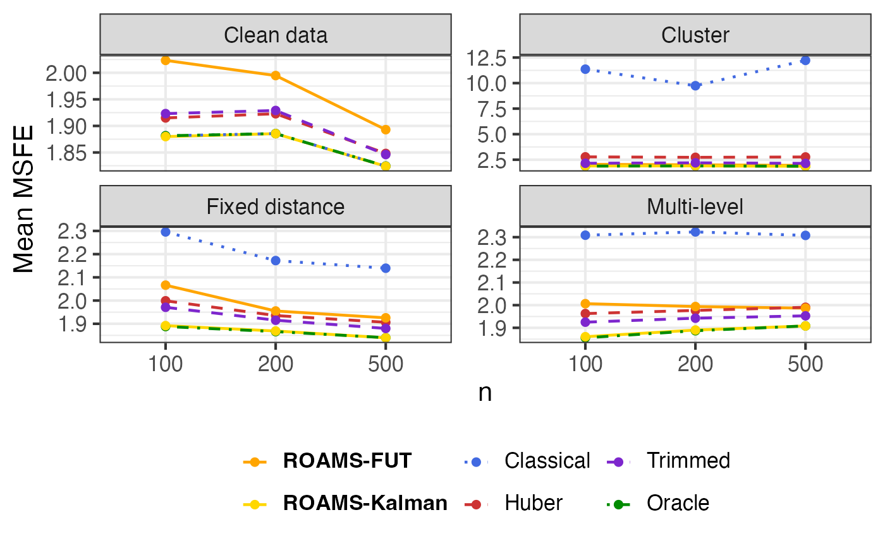
eval_metrics_study1 |>
select(sample, n, setting, method, MSFE) |>
mutate(method = factor(method, levels = methods)) |>
ggplot() +
aes(x = factor(n), y = MSFE, colour = method) +
geom_boxplot() +
facet_wrap(~ setting, scales = "free_y",
labeller = as_labeller(setNames(labels_settings, settings))) +
scale_colour_manual(values = setNames(colours, methods),
labels = setNames(labels, methods)) +
labs(x = "n", y = "MSFE", colour = NULL, linetype = NULL) +
theme(legend.text = element_markdown())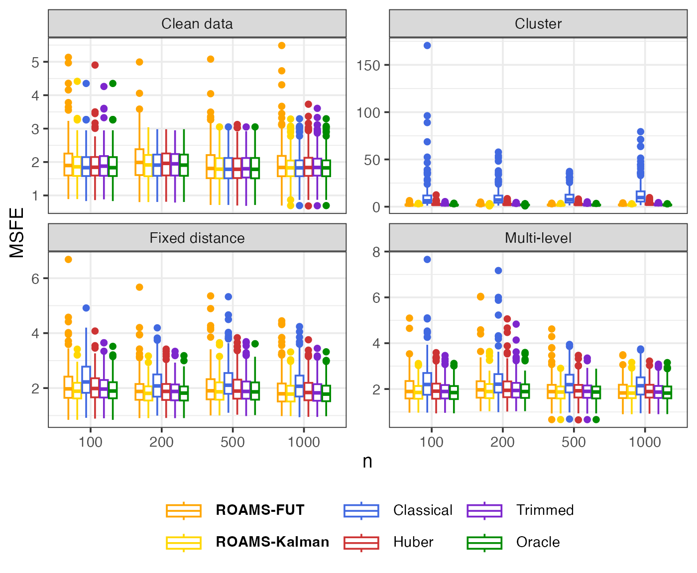
Phi: Parameter estimation error (RMSE)
Mean-aggregated and raw RMSE of each method’s phi estimate from the true value of 0.8:
methods = c("roams_fut_model", "classical_model", "huber_model", "trimmed_model", "oracle_model")
labels = c("**ROAMS**", "Classical", "Huber", "Trimmed", "Oracle")
colours = c("orange", "royalblue", "brown3", "purple3", "green4")
linetypes = c("solid", "dotted", "dashed", "dashed", "dotdash")
eval_metrics_study1 |>
filter(method != "roams_kalman_model") |>
group_by(n, setting, method) |>
summarise(RMSE = mean(sqrt(par_dist_phi))) |>
mutate(method = factor(method, levels = methods)) |>
ggplot() +
aes(x = factor(n), y = RMSE, colour = method, linetype = method,
group = method) +
geom_line(linewidth = LW) +
geom_point(size = PS) +
facet_wrap(~ setting, scales = "free_y",
labeller = as_labeller(setNames(labels_settings, settings))) +
scale_colour_manual(values = setNames(colours, methods),
labels = setNames(labels, methods)) +
scale_linetype_manual(values = setNames(linetypes, methods),
labels = setNames(labels, methods)) +
labs(x = "n", y = "Mean RMSE (phi)",
colour = NULL, linetype = NULL) +
theme(legend.text = element_markdown())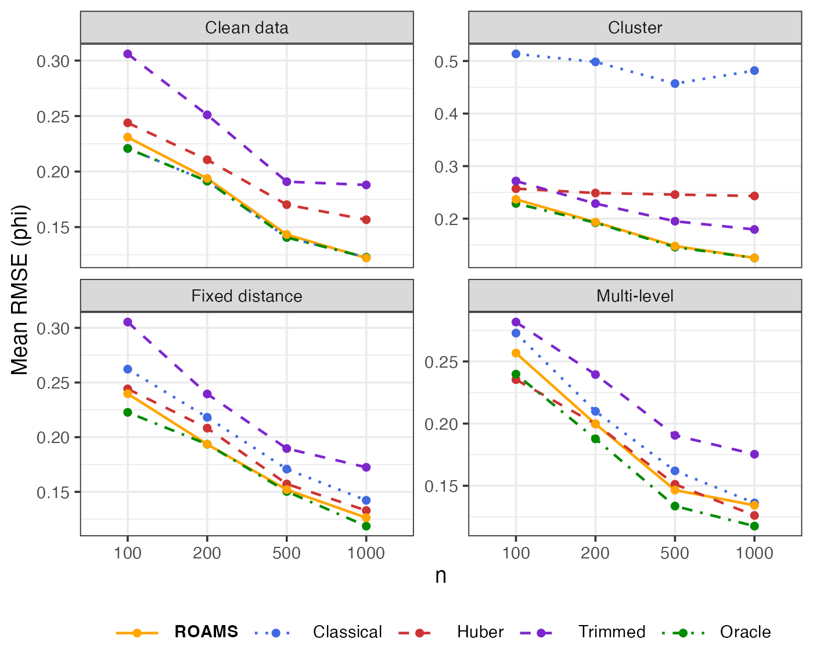
eval_metrics_study1 |>
filter(method != "roams_kalman_model") |>
mutate(method = factor(method, levels = methods)) |>
ggplot() +
aes(x = factor(n), y = sqrt(par_dist_phi), colour = method) +
geom_boxplot() +
facet_wrap(~ setting, scales = "free_y",
labeller = as_labeller(setNames(labels_settings, settings))) +
scale_colour_manual(values = setNames(colours, methods),
labels = setNames(labels, methods)) +
labs(x = "n", y = "RMSE (phi)",
colour = NULL, linetype = NULL) +
theme(legend.text = element_markdown())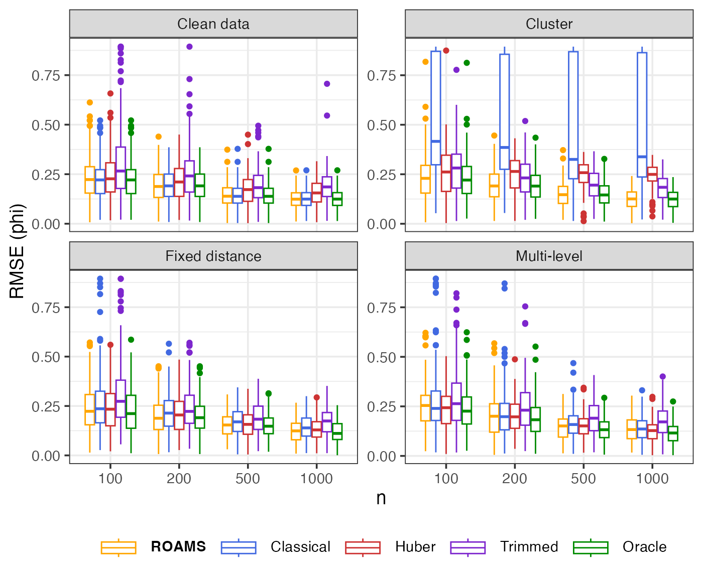
State error variances: Parameter estimation error (RMSE)
Mean-aggregated and raw RMSE of each method’s state error variances estimates from the true value of (0.1, 0.1):
eval_metrics_study1 |>
filter(method != "roams_kalman_model") |>
group_by(n, setting, method) |>
summarise(RMSE = mean(sqrt(par_dist_state_var))) |>
mutate(method = factor(method, levels = methods)) |>
ggplot() +
aes(x = factor(n), y = RMSE, colour = method, linetype = method,
group = method) +
geom_line(linewidth = LW) +
geom_point(size = PS) +
facet_wrap(~ setting, scales = "free_y",
labeller = as_labeller(setNames(labels_settings, settings))) +
scale_colour_manual(values = setNames(colours, methods),
labels = setNames(labels, methods)) +
scale_linetype_manual(values = setNames(linetypes, methods),
labels = setNames(labels, methods)) +
labs(x = "n", y = "Mean RMSE (state error vars)",
colour = NULL, linetype = NULL) +
theme(legend.text = element_markdown())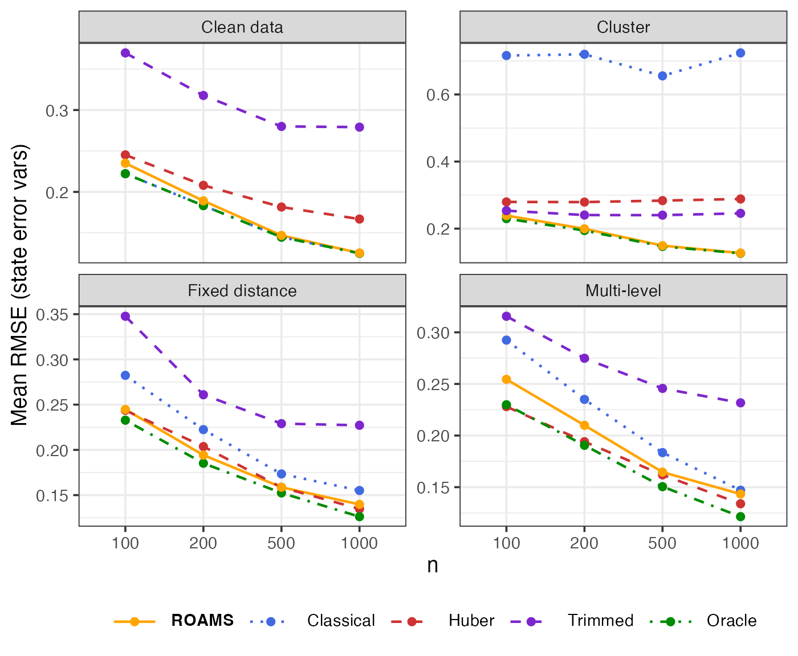
eval_metrics_study1 |>
filter(method != "roams_kalman_model") |>
mutate(method = factor(method, levels = methods)) |>
ggplot() +
aes(x = factor(n), y = sqrt(par_dist_state_var), colour = method) +
geom_boxplot() +
facet_wrap(~ setting, scales = "free_y",
labeller = as_labeller(setNames(labels_settings, settings))) +
scale_colour_manual(values = setNames(colours, methods),
labels = setNames(labels, methods)) +
labs(x = "n", y = "RMSE (state error vars)",
colour = NULL, linetype = NULL) +
theme(legend.text = element_markdown())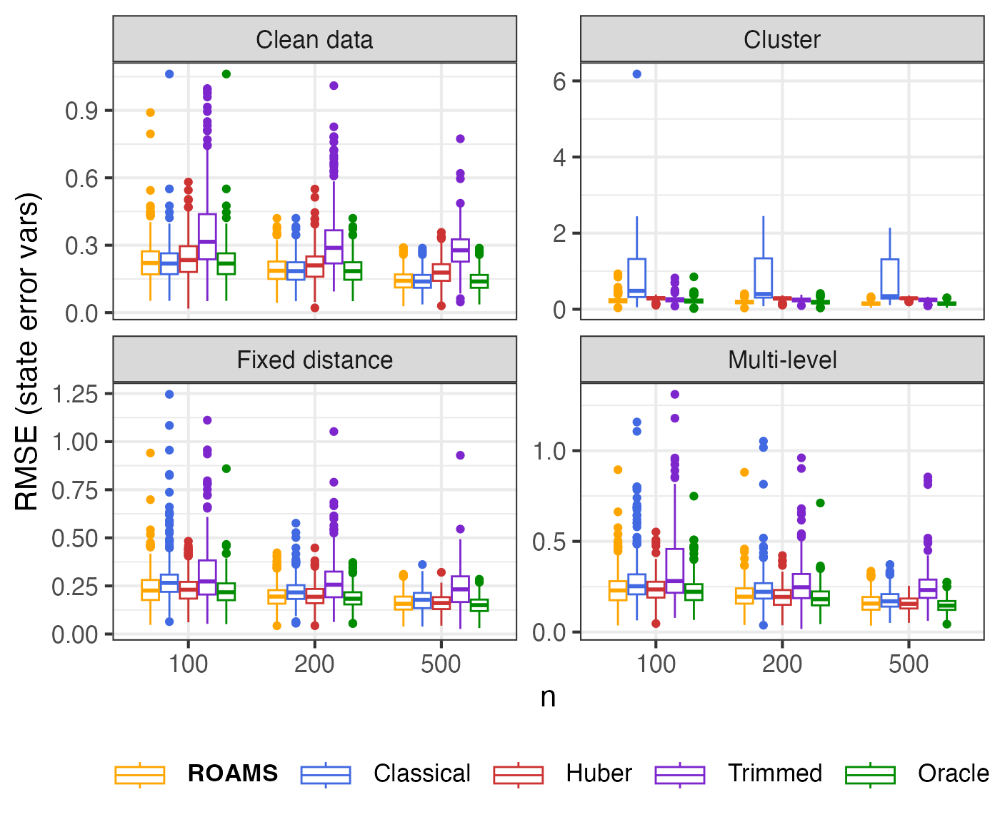
Observation error variances: Parameter estimation error (RMSE)
Mean-aggregated and raw RMSE of each method’s observation error variances estimates from the true value of (0.4, 0.4):
eval_metrics_study1 |>
filter(method != "roams_kalman_model") |>
group_by(n, setting, method) |>
summarise(RMSE = mean(sqrt(par_dist_obs_var))) |>
mutate(method = factor(method, levels = methods)) |>
ggplot() +
aes(x = factor(n), y = RMSE, colour = method, linetype = method,
group = method) +
geom_line(linewidth = LW) +
geom_point(size = PS) +
facet_wrap(~ setting, scales = "free_y",
labeller = as_labeller(setNames(labels_settings, settings))) +
scale_colour_manual(values = setNames(colours, methods),
labels = setNames(labels, methods)) +
scale_linetype_manual(values = setNames(linetypes, methods),
labels = setNames(labels, methods)) +
labs(x = "n", y = "Mean RMSE (obs error vars)",
colour = NULL, linetype = NULL) +
theme(legend.text = element_markdown())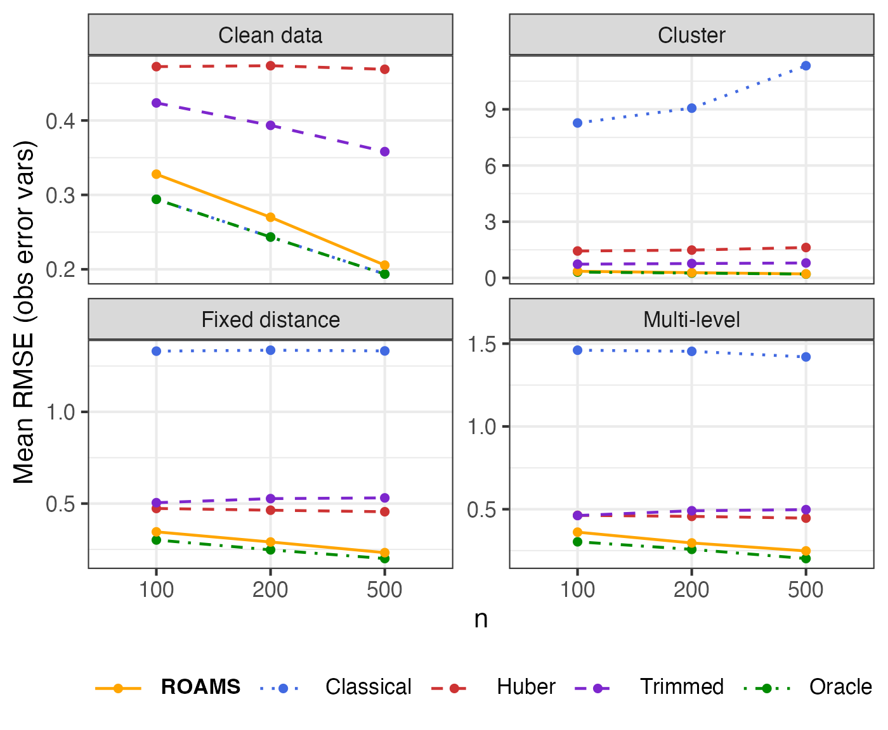
eval_metrics_study1 |>
filter(method != "roams_kalman_model") |>
mutate(method = factor(method, levels = methods)) |>
ggplot() +
aes(x = factor(n), y = sqrt(par_dist_obs_var), colour = method) +
geom_boxplot() +
facet_wrap(~ setting, scales = "free_y",
labeller = as_labeller(setNames(labels_settings, settings))) +
scale_colour_manual(values = setNames(colours, methods),
labels = setNames(labels, methods)) +
labs(x = "n", y = "RMSE (obs error vars)",
colour = NULL, linetype = NULL) +
theme(legend.text = element_markdown())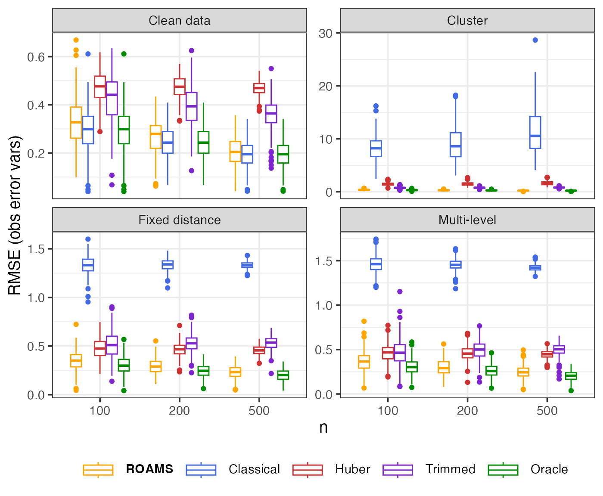
Table of parameter estimation mean RMSEs for n = 1000
Table 1 of Shankar et al. (2026). For each outlier configuration, the mean parameter estimation RMSEs of each method is reported relative to the oracle benchmark method:
eval_metrics_study1 |>
filter(method != "roams_kalman_model") |>
filter(n == 1000) |>
select(setting, method, par_dist_phi:par_dist_state_var) |>
group_by(setting, method) |>
summarise(phi = mean(sqrt(par_dist_phi)),
obs_var = mean(sqrt(par_dist_obs_var)),
state_var = mean(sqrt(par_dist_state_var))) |>
mutate(
phi = phi / phi[which(method == "oracle_model")],
obs_var = obs_var / obs_var[which(method == "oracle_model")],
state_var = state_var / state_var[which(method == "oracle_model")]
) |>
ungroup() |>
pivot_longer(c(phi, obs_var, state_var), names_to = "parameter") |>
mutate(parameter = fct_inorder(parameter)) |>
mutate(method = str_remove(method, "_model"),
method = str_to_title(method),
method = ifelse(method == "Roams_fut", "ROAMS", method)) |>
pivot_wider(names_from = method, values_from = value) |>
arrange(parameter, setting) |>
select(parameter,setting, everything()) |>
mutate(parameter = case_when(
parameter == "phi" ~ "phi autocorrelation",
parameter == "obs_var" ~ "Observation error var",
parameter == "state_var" ~ "State error var"
)) |>
mutate(setting = str_to_sentence(setting)) |>
rename(Parameter = parameter,
Configuration = setting) |>
select(Parameter, Configuration,
Oracle, ROAMS, Huber, Trimmed, Classical) |>
kable(digits = 2)| Parameter | Configuration | Oracle | ROAMS | Huber | Trimmed | Classical |
|---|---|---|---|---|---|---|
| phi autocorrelation | Clean data | 1 | 1.00 | 1.28 | 1.53 | 1.00 |
| phi autocorrelation | Cluster | 1 | 1.00 | 1.94 | 1.43 | 3.85 |
| phi autocorrelation | Fixed distance | 1 | 1.11 | 1.12 | 1.45 | 1.20 |
| phi autocorrelation | Multi-level | 1 | 1.13 | 1.07 | 1.49 | 1.16 |
| Observation error var | Clean data | 1 | 1.03 | 2.86 | 2.17 | 1.00 |
| Observation error var | Cluster | 1 | 1.02 | 10.63 | 4.87 | 83.38 |
| Observation error var | Fixed distance | 1 | 1.16 | 2.63 | 3.11 | 7.70 |
| Observation error var | Multi-level | 1 | 1.71 | 2.50 | 2.83 | 7.99 |
| State error var | Clean data | 1 | 1.00 | 1.33 | 2.23 | 1.00 |
| State error var | Cluster | 1 | 1.01 | 2.28 | 1.94 | 5.73 |
| State error var | Fixed distance | 1 | 1.12 | 1.07 | 1.80 | 1.23 |
| State error var | Multi-level | 1 | 1.18 | 1.10 | 1.91 | 1.21 |
ROAMS iterations
Mean-aggregated and raw number of iterations performed by ROAMS when fitting models.
settings = c("clean data", "cluster", "fixed distance", "multi-level")
labels_settings = c("Clean data", "Cluster", "Fixed distance", "Multi-level")
eval_metrics_study1 |>
filter(method == "roams_fut_model") |>
group_by(n, setting) |>
summarise(iterations = mean(iterations)) |>
ggplot() +
aes(x = factor(n), y = iterations,
colour = setting, group = setting, linetype = setting) +
geom_line(linewidth = LW) +
geom_point(size = PS) +
labs(x = "n", y = "Mean ROAMS iterations", colour = NULL, linetype = NULL) +
scale_colour_manual(
values = setNames(c("#0072B2","#56B4E9","#009E73","#F5C710"), settings),
labels = setNames(labels_settings, settings)) +
scale_linetype_manual(
values = setNames(c("solid", "dashed", "dotted", "dotdash"), settings),
labels = setNames(labels_settings, settings)) +
guides(colour = guide_legend(ncol = 2, byrow = TRUE))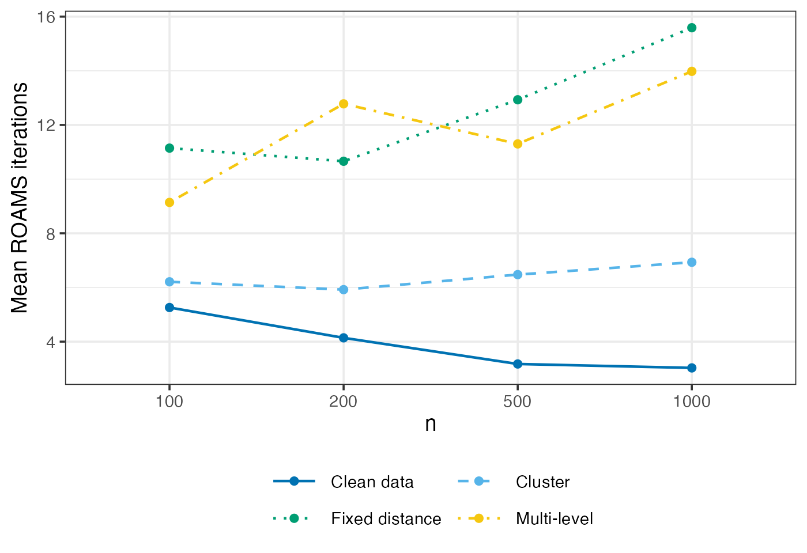
eval_metrics_study1 |>
filter(method == "roams_fut_model") |>
ggplot() +
aes(x = factor(n), y = iterations, colour = setting) +
geom_boxplot() +
labs(x = "n", y = "ROAMS iterations", colour = NULL, linetype = NULL) +
scale_colour_manual(
values = setNames(c("#0072B2","#56B4E9","#009E73","#F5C710"), settings),
labels = setNames(labels_settings, settings)) +
guides(colour = guide_legend(ncol = 2, byrow = TRUE))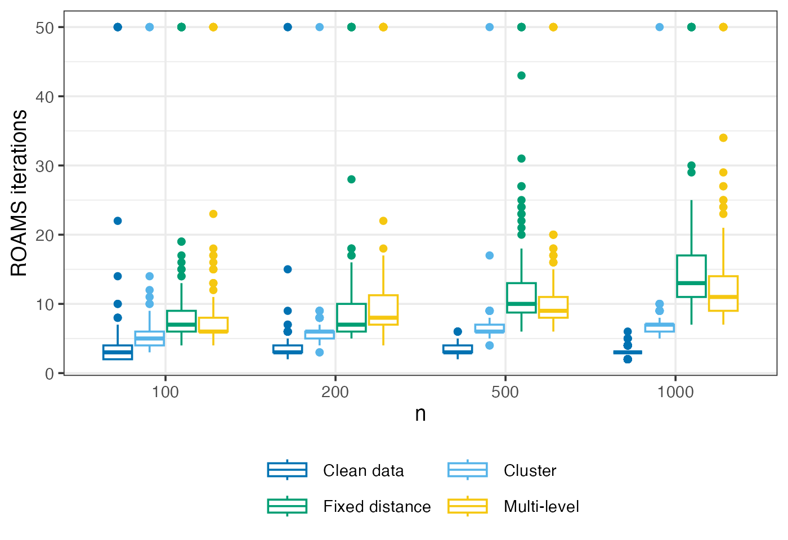
ROAMS lambda selected
Mean-aggregated and raw value of the tuning parameter \(\lambda\) selected by ROAMS when fitting models.
settings = c("clean data", "cluster", "fixed distance", "multi-level")
labels_settings = c("Clean data", "Cluster", "Fixed distance", "Multi-level")
eval_metrics_study1 |>
filter(method == "roams_fut_model") |>
group_by(n, setting) |>
summarise(lambda = mean(lambda)) |>
ggplot() +
aes(x = factor(n), y = lambda,
colour = setting, group = setting, linetype = setting) +
geom_line(linewidth = LW) +
geom_point(size = PS) +
labs(x = "n", y = "Mean ROAMS lambda", colour = NULL, linetype = NULL) +
scale_colour_manual(
values = setNames(c("#0072B2","#56B4E9","#009E73","#F5C710"), settings),
labels = setNames(labels_settings, settings)) +
scale_linetype_manual(
values = setNames(c("solid", "dashed", "dotted", "dotdash"), settings),
labels = setNames(labels_settings, settings)) +
guides(colour = guide_legend(ncol = 2, byrow = TRUE))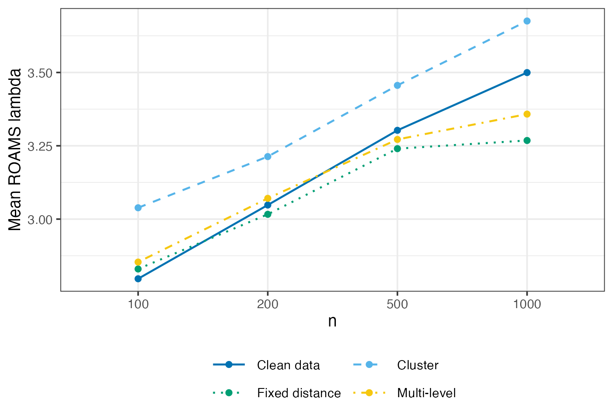
eval_metrics_study1 |>
filter(method == "roams_fut_model") |>
ggplot() +
aes(x = factor(n), y = lambda, colour = setting) +
geom_boxplot() +
labs(x = "n", y = "ROAMS lambda", colour = NULL, linetype = NULL) +
scale_colour_manual(
values = setNames(c("#0072B2","#56B4E9","#009E73","#F5C710"), settings),
labels = setNames(labels_settings, settings)) +
guides(colour = guide_legend(ncol = 2, byrow = TRUE))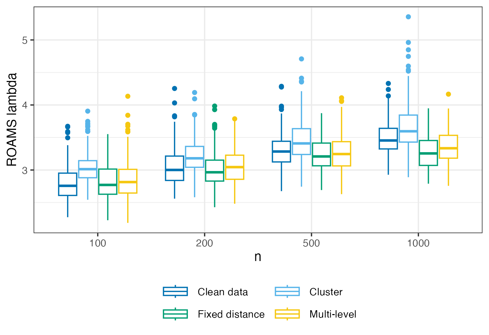